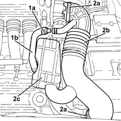
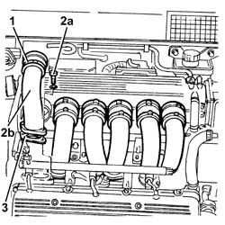

1072B42 LEFT HAND OR RIGHT HAND INLET MANIFOLD (ONE) - R+R
- Path
- Procedures > 10 ENGINE UNIT > 1072 INLET AND EXHAUST MANIFOLDS > 1072B INLET MANIFOLDS > 1072B42 LEFT HAND OR RIGHT HAND INLET MANIFOLD (ONE) - R+R
- Kind
- repair procedure (removal / refitting; the operation number is the code)
- Applies to
- engines: 3.2 V6; all production periods
- Interactive page
- https://sloeber94.github.io/elrnDB-aGt/en/#/125001077
Applies to: engines: 3.2 V6; all production periods
 Removing
Removing
 Refitting
Refitting1. Loosen the band (1a) and disconnect the oil vapour recirculation pipe (1b) from the corrugated hose.
2. Loosen the bands (2a) and remove the corrugated hose (2b), complete with resonator (2c).

Applies to: engines: 3.2 V6; all production periods
1. Loosen the bands fixing the inlet ducts to the air chamber.
2. Undo the bolts (2a) and remove the inlet ducts (2b).
3. Remove the gaskets.

Applies to: engines: 3.2 V6; all production periods
Refitting
RemovingPlace the intake manifolds complete with gaskets back in their housings and fasten them using the bolts
Tighten the bands fixing the inlet ducts to the air chamber.
Place the corrugated hose, complete with resonator, back in its housing and tighten the bands.
Connect the oil vapour recirculation pipe to the corrugated hose and tighten the band.